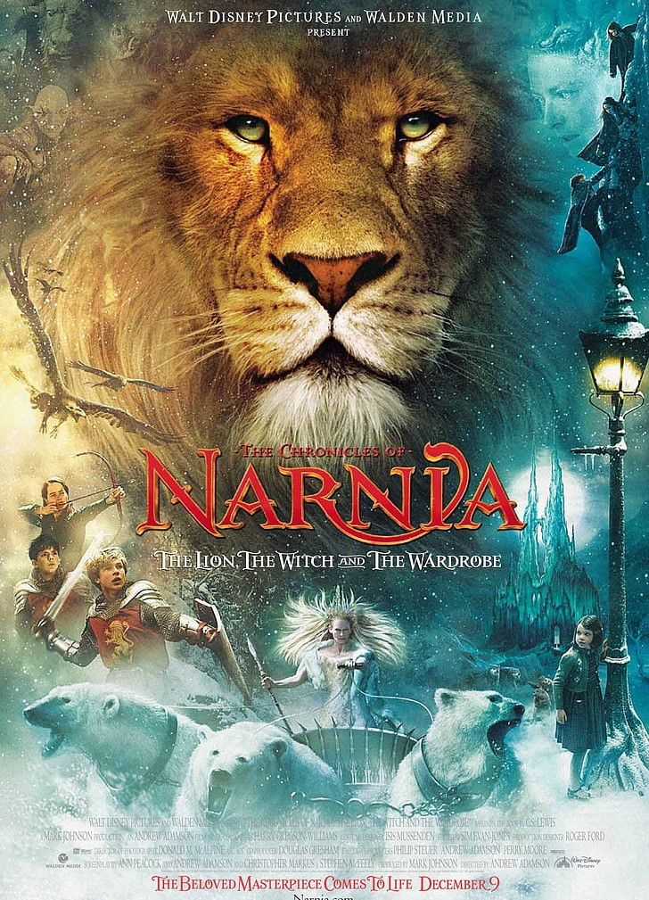
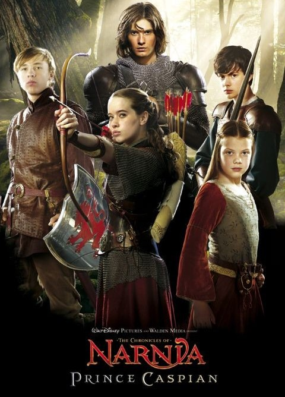
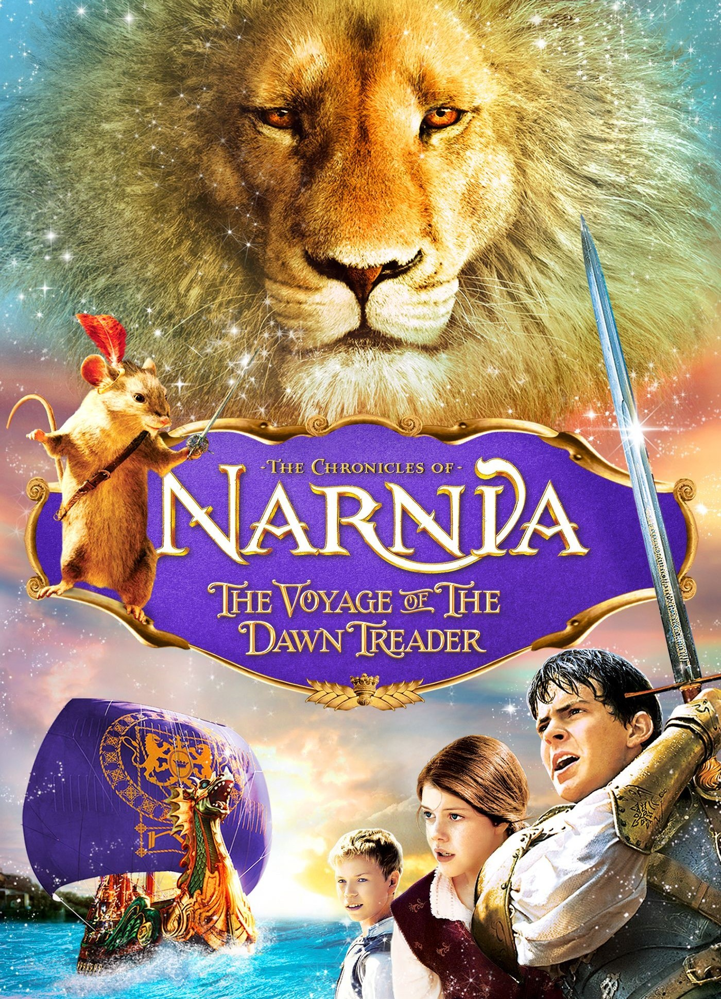

Books
Top 5 Fantasy Books for you -
Number 1 :



What is the story of Narnia?
The Chronicles of Narnia follows a group of children who are evacuated to the English countryside during
war,
The books tell their adventures in the imaginary kingdom of Narnia, guided by a talking lion named
Aslan, as they fight The White Witch and restore the throne to its rightful line.
What is the moral of Narnia?
Moral principles such as honesty and integrity, forgiveness, courage, and self-sacrifice,
will be discussed as these are represented by various characters, human and animal, in the novel.
What is the meaning of the word Narnia?
Narnia means an imaginary land of strange people and talking animals in a series of seven
children's books (sometimes called the Narnia Chronicles) by C S Lewis.